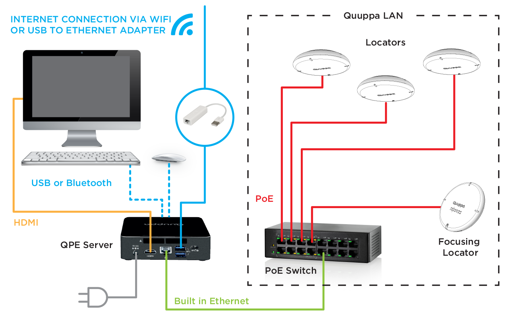
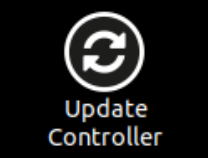

Development Kit のセットアップ
まず、 Development Kit システムをセットアップする必要があります。セットアップを完了すると、 Quuppa Controller コンピューター (下の図の QPE Server) のデスクトップから必要な Quuppa ソフトウェアすべてにアクセスできるようになります。
-
ディスプレイ、キーボード、マウス、PoE スイッチを Quuppa Controller に接続します。

- PoE スイッチをオンにします。
- Focusing Locator を PoE スイッチに接続します。
- Quuppa Controller を起動します。
-
次の認証情報を使って、
Quuppa Controller にログインします。
- ユーザー名：DemoUser
- パスワード：QuuppaDemo
Important:初めて Quuppa Controller にログインする際には、 DemoUser のパスワードの変更を求められます。変更後のパスワードはメモするなどして、必ずお控えください。Quuppa では、後からパスワードをリセットすることはできません。Note:Quuppa Controller のデフォルト設定では、英語 (UK) 配列キーボードが使われます。 -
Quuppa Controller を Wi-Fi または USB イーサネット アダプター経由でインターネットに接続します。
Important:インターネットへの接続に、内蔵のイーサネット接続を使用しないでください。
-
最新バージョンが実行されていることを確認するため、 Quuppa Controller をアップデートしてください。まずは、デスクトップにある
Update Controller アイコンをダブルクリックします。

端末ウィンドウが開き、次の情報の入力を求められます。
- DemoUser のパスワード (Quuppa Controller のパスワード)。Note:入力したパスワードが画面に表示されることはありません。これは Linux のセキュリティ特性です。
- Quuppa Customer Portal のユーザー名。
- Quuppa Customer Portal のパスワード。
- 二要素認証を有効化している場合には、そのパスワード。有効にしていない場合は、Enter キーを押して続行します。
アップデートが始まります。完了すると、端末ウィンドウが閉じられます。
- DemoUser のパスワード (Quuppa Controller のパスワード)。
- プロジェクトの視覚的リファレンスとして、展開エリアのフロアプランなどの背景イメージを使用している場合は、 USB メモリやメールなどを通じて背景イメージを Quuppa Controller にインポートしてください。